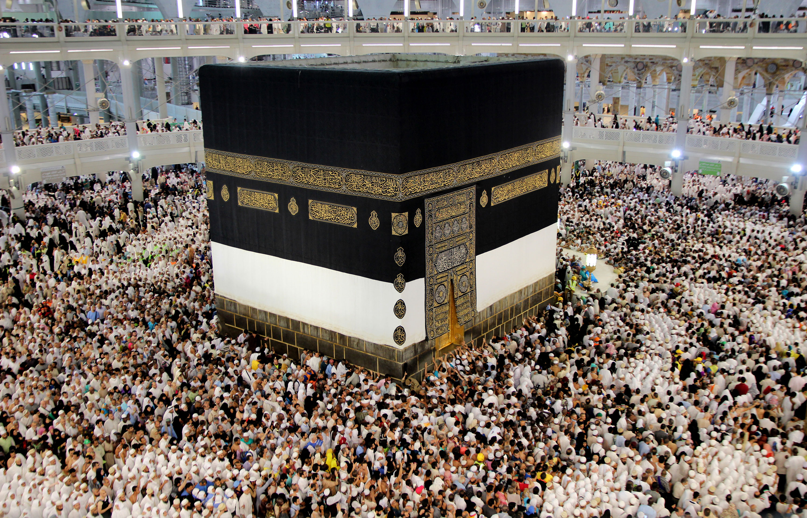

Our Favorite Holidays and Festivals
All throughout the world, there are hundreds of events celebrated across the world. In a very tight selection process, we have personally picked our favorite holidays across the world.
Halloween

Like many other holidays, Halloween has evolved and changed throughout history. Over 2,000 years ago people called the Celts lived in what is now
Ireland, the UK, and parts of Northern France. November 1 was their New Year's Day. They believed that the night before the New Year (October 31) was
a time when the living and the dead came together.
More than a thousand years ago the Christian church named November 1 All Saints Day (also called All Hallows.) This was a special holy day to
honor the saints and other people who died for their religion. The night before All Hallows was called Hallows Eve. Later the name was changed to Halloween.
These days Halloween is not usually considered a religious holiday. It is primarily a fun day for children. Children dress up in costumes like people
did a thousand years ago. But instead of worrying about evil spirits, they go from house to house. They knock on doors and say "trick or treat."
The owner of each house gives candy or something special to each trick or treater.
The Hajj
The Hajj is an annual islamic pilgrimage to Mecca, the most holy city of the Muslims, and a mandatory religious duty for Muslims that must be carried out
at least once in their lifetime by all adult Muslims who are physically and financially capable of undertaking the journey. The Hajj is associated with the
life of Islamic prophet Muhammad from the 7th century, but the ritual of pilgrimage to Mecca is considered by Muslims to stretch back thousands of years to
the time of Abraham.
During Hajj, pilgrims join processions of hundreds of thousands of people, who simultaneously converge on Mecca for the week of the Hajj,
and perform a series of rituals: each person walks counter-clockwise seven times around the Ka'aba (the cube-shaped building and the direction of prayer for the
Muslims), runs back and forth between the hills of Al-Safa and Al-Marwah, drinks from the Zamzam Well, goes to the plains of Mount Arafat to stand in vigil, spends
a night in the plain of Muzdalifa, and performs symbolic stoning of the devil by throwing stones at three pillars. The pilgrims then shave their heads, perform a
ritual of animal sacrifice, and celebrate the three-day global festival of Eid al-Adha. Pilgrims can also go to Mecca to perform the rituals at other times of the year.
This is sometimes called the "lesser pilgrimage", or Umrah. However, even if they choose to perform the Umrah, they are still obligated to perform the Hajj at some
other point in their lifetime if they have the means to do so.
St. Patrick's Day

Saint Patrick's Day, or the Feast of Saint Patrick is a cultural and religious celebration held on 17 March, the traditional death date of Saint Patrick (AD 385–461),
the foremost patron saint of Ireland. Saint Patrick's Day was made an official Christian feast day in the early 17th century and is observed by the Catholic Church, the
Anglican Communion, the Eastern Orthodox Church, and the Lutheran Church. The day commemorates Saint Patrick and the arrival of Christianity in Ireland. Celebrations
generally involve public parades and festivals, céilithe, and the wearing of green attire or shamrocks. Christians also attend church services and the Lenten restrictions
on eating and drinking alcohol are lifted for the day, which has encouraged and propagated the holiday's tradition of alcohol consumption.
Saint Patrick's Day is a
public holiday in the Republic of Ireland,[ Northern Ireland, the Canadian province of Newfoundland and Labrador, and the British Overseas Territory of Montserrat.
It is also widely celebrated by the Irish diaspora around the world, especially in Great Britain, Canada, the United States, Argentina, Australia, and New Zealand.
Saint Patrick's Day is celebrated in more countries than any other national festival. Modern celebrations have been greatly influenced by those of the Irish diaspora,
particularly those that developed in North America.
In recent years, there has been criticism of Saint Patrick's Day celebrations for having become too commercialized
and for fostering negative stereotypes of the Irish.
Christmas
Christmas or Christmas Day is an annual festival commemorating the birth of Jesus Christ, observed most commonly
on December 25 as a religious and cultural celebration among billions of people around the world. A feast central to the Christian liturgical year,
it is prepared for by the season of Advent or the Nativity Fast and initiates the season of Christmastide, which historically in the West lasts twelve
days and culminates on Twelfth Night; in some traditions, Christmastide includes an Octave.
Christmas Day is a public holiday in many of the world's nations,
is celebrated culturally by a large number of non-Christian people, and is an integral part of the holiday season, while some Christian groups reject the celebration.
In several countries, celebrating Christmas Eve on December 24 has the main focus rather than December 25, with gift-giving and sharing a traditional meal with the family.
The date of Christmas may have initially been chosen to correspond with the day exactly nine months after the day on which early Christians believed that Jesus was conceived,
or with one or more ancient polytheistic festivals that occurred near the Roman winter solstice; a further solar connection has been suggested because of a biblical verse
identifying Jesus as the "Sun of righteousness".
New Years
New Year is the time at which a new calendar year begins and the calendar's year count increments by one. Many cultures celebrate the event in some manner. The New Year of the
Gregorian calendar, today mostly in use, falls on 1 January (New Year's Day), as was the case both in the old Roman calendar (at least after about 713 BCE) and in the Julian
calendar that succeeded it. The order of months was January to December in the Old Roman calendar during the reign of King Numa Pompilius in about 700 BCE, according to Plutarch
and Macrobius, and has been in continuous use since that time. Many countries, such as the Czech Republic, Italy, Spain, the UK, and the United States, mark 1 January as a national
holiday.
During the Middle Ages in western Europe, while the Julian calendar was still in use, authorities moved New Year's Day variously, depending upon locale, to one of several
other days, among them: 1 March, 25 March, Easter, 1 September, and 25 December. These New Year's Day changes generally reverted to using January 1 before or during the various
local adoptions of the Gregorian calendar, beginning in 1582. The change from March 25 – Lady Day, one of the four quarter days – to January 1 took place in Scotland in 1600,
before the ascension of James VI of Scotland to the throne of England in 1603 and well before the formation of the Kingdom of Great Britain in 1707. In England and Wales
(and in all British dominions, including Britain's American colonies), 1751 began on March 25 and lasted 282 days, and 1752 began on January 1. For more information about
the changeover from the Julian calendar to the Gregorian calendar and the effect on the dating of historical events.
A great many other calendars have seen use historically in different parts of the world; some such calendars count years numerically, while others do not.
The expansion of Western culture during recent centuries has seen such widespread official adoption of the Gregorian calendar that its recognition and that of
January 1 as the New Year has become virtually global. (Note for example the New Year celebrations held in Dubai to mark the start of 2014, which broke the world
record for the most fireworks set off in a single display, lasting for six minutes and including the use of over 500,000 fireworks.)